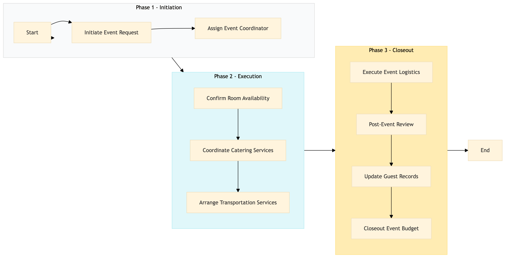

| Role | Steps |
|---|---|
| Front Desk Agent | 1.1 3.3 |
| Event Manager | 1.2 3.2 |
| Revenue Manager | 2.1 |
| Executive Chef | 2.2 |
| Transportation Coordinator | 2.3 |
| Event Coordinator | 3.1 |
| Step | Name | Role | System | Input | Output | KPI | Dec? | Exc? | Pain Point / Risk |
|---|---|---|---|---|---|---|---|---|---|
| 1.1 | Initiate Event Request | Front Desk Agent | Oracle OPERA Cloud | Event request form from guest or internal team | Event request logged in Oracle OPERA Cloud | Less than 5 minutes | N | Y | Handling conflicting event requests |
| 1.2 | Assign Event Coordinator | Event Manager | Oracle OPERA Cloud | Logged event request | Assigned event coordinator and communication plan | Less than 10 minutes | N | Y | Ensuring proper resource allocation |
| 2.1 | Confirm Room Availability | Revenue Manager | Oracle OPERA Cloud, IDeaS G3 RMS | Event details and guest list | Confirmed room block with availability status | Less than 15 minutes | Y | Y | Managing last-minute changes in room bookings |
| 2.2 | Coordinate Catering Services | Executive Chef | Oracle MICROS Simphony | Menu preferences and guest dietary restrictions | Catering plan and menu finalized | Less than 30 minutes | N | Y | Adjusting menus for special dietary needs |
| 2.3 | Arrange Transportation Services | Transportation Coordinator | SynXis CRS, Book4Time | Guest transportation preferences and schedule | Transportation arrangements confirmed | Less than 20 minutes | Y | Y | Handling unforeseen travel disruptions |
| 3.1 | Execute Event Logistics | Event Coordinator | Oracle OPERA Cloud, Knowcross HotSOS | Finalized event plan and guest list | Event executed with minimal disruptions | Less than 2 hours | Y | Y | Managing on-site emergencies |
| 3.2 | Post-Event Review | Event Manager | Oracle OPERA Cloud, Marriott Bonvoy CRM | Event execution details and guest feedback | Post-event report and action plan | Less than 1 hour | N | Y | Gathering comprehensive feedback |
| 3.3 | Update Guest Records | Front Desk Agent | Oracle OPERA Cloud, Marriott Bonvoy CRM | Event details and guest satisfaction scores | Guest records updated with event information | Less than 5 minutes | N | Y | Ensuring data accuracy |
| 3.4 | Closeout Event Budget | Finance Manager | SAP S/4HANA | Event expenses and budget details | Finalized event budget report | Less than 30 minutes | N | Y | Tracking all associated costs |
This process outlines how a Marriott full-service hotel manages anniversary and special occasion events, ensuring seamless coordination between departments and systems to enhance guest experiences.